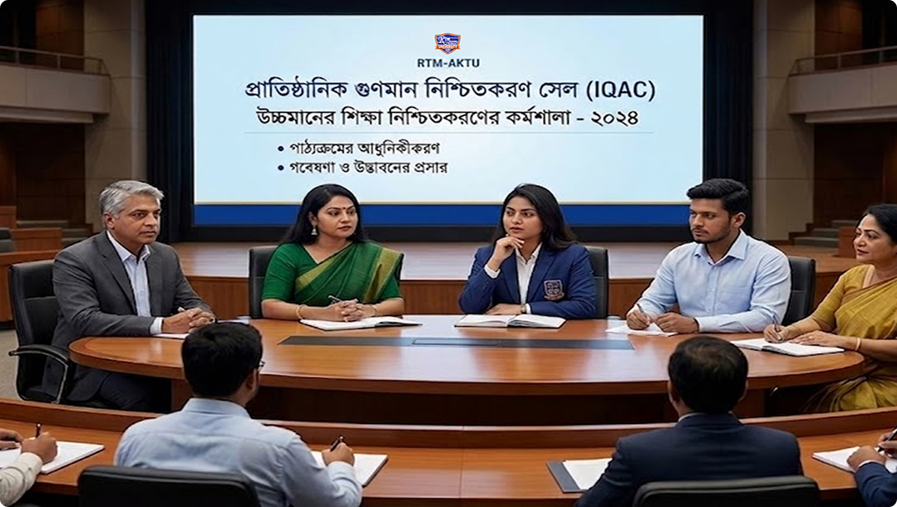
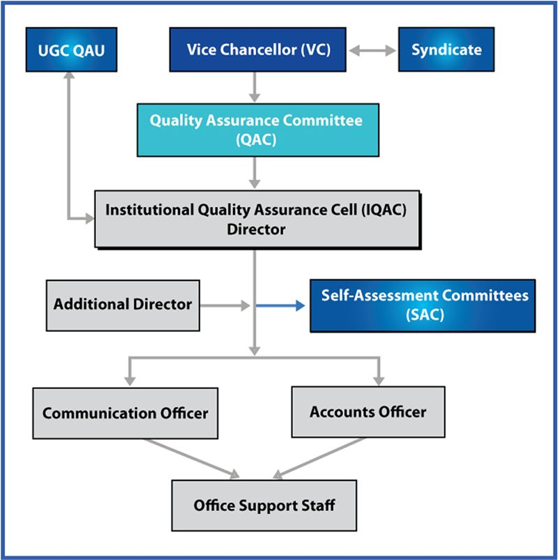

Shaping the Future of Quality Education
Institutional Quality Assurance Cell (IQAC)

The Institutional Quality Assurance Cell (IQAC) of RTM Al-Kabir Technical University (RTM-AKTU) is established with a view of achieving the “excellence” in higher education. The prime goal of RTM-AKTU’s quality assurance cell is to support the university in attaining its goal through providing good quality education. It is the mandate of IQAC of RTM-AKTU is to ensure institutionalization of best practices with transparency, accountability, and credibility in accordance with internationally acceptable quality assurance practices.
The IQAC of RTM-AKTU is an integral part of the University and performs its functions under the direction of the Quality Assurance (QA) Committee led by Hon’ble Vice Chancellor (VC) of the University.
Vision
To achieve academic excellence by ensuring quality assurance practices.
Mission
To coordinate, evaluate and compliance with Quality Assurance in teaching-learning, research and support services aimed at achieving the goals of the University.
General Objective
To encourage quality education culture by ensuring high ethical and Quality Assurance (QA) Standards.
Specific Objectives of the IQAC
- Assessing and strengthening capacity for effective governance, teaching-learning, research and community services;
- To monitor and ensure that the quality assurance systems in all aspects are appropriate and relevant;
- Prepare the University to meet the external quality assurance assessment and accreditation requirements;
- Monitoring and evaluating Self-Assessment (SA) practices and processes through audit, survey and other instruments; and
- Co-ordinate all QA related activities at the national level and liaise with UGC and other external QA agencies.
Strategy
- Review the existing policies and procedures of the University and revise, if deemed necessary, in coordination with the relevant authority;
- Conduct performance audit and self-assessment of teaching–learning process;
- Improve quality of Course curricula in the context of rapidly changing global environment;
- Inform academic and administrative staff as well the students about the evaluation results, efforts made and recommendation;
- Organize seminars, workshops, training programs and conferences; and
- Develop a strong research culture.
RTM-AKTU’s IQAC Structure
The activities of the IQAC of RTM-AKTU are supervised by the Quality Assurance Committee (QAC) led by Hon’ble Vice Chancellor (VC) of the University. The IQAC is responsible to liaise between Quality Assurance Unit (QAU) of university Grants Commission (UGC) and RTM-AKTU in matter of quality assurance. The QAU may provide guidance to the IQAC to implement all matters concerning quality assurance. In addition, the IQAC, in coordination with Self-Assessment Committee (SAC), is responsible to develop quality assurance culture within the university.
Organogram of IQAC of RTM-AKTU – A Functional Structure

Functions of the IQAC
The IQAC of RTM-AKTU is organized in a manner which befits the size, existing structure and capacity of the University as delineated in the University Act. The major functions of IQAC are to:
- Support the University in achieving its vision and mission through providing quality education;
- Develop standards and benchmarks for various academic and administrative activities of the university;
- To promote modern teaching-learning pedagogy;
- Systematically monitor and evaluate the existing standards and procedures for further improvement of delivery of higher education;
- Help developing new standards, policies, systems, processes, and procedures by adapting and incorporating best practices;
- Provide necessary support to the Departments/Institutes/Centers to conduct self-assessment and implement QA process;
- To prepare and produce annual institutional quality assurance report and place to the QAC for future action plan; and
- Develop an Institutional QA Strategic Plan.